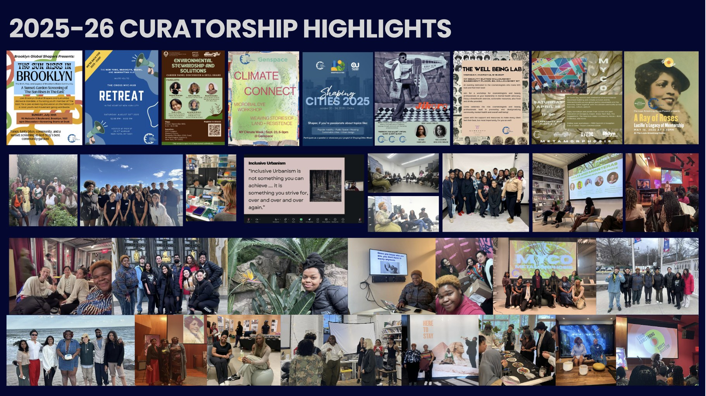

What's happening
Events.
Where to find us next, and a look back at what the hub's been up to. Looking to join the hub itself? Head to Apply.
Past Curatorship Hub Events ('25–'26)
- Sow Rhythm Seed Mother's Day (May 16, 2026)
- So Fresh So Clean—Black Creatives at SoHo House (April 2026)
- MYCO (April 18, 2026)
- Cosmetology Well-Being Lab (March 2nd)
- Fall Social (October 24th at Urban Glass)
- Sake + Sunset (September 28th)
- Climate Connect with GenSpace (September 23rd, GenSpace—Sunset Park, 6-9p)
- The Sun Rises in Brooklyn: Movie Screening + Curator Year Kick-Off (July 19th)
- BHM + Valentine's Day Event at Columbia (February 21st)
